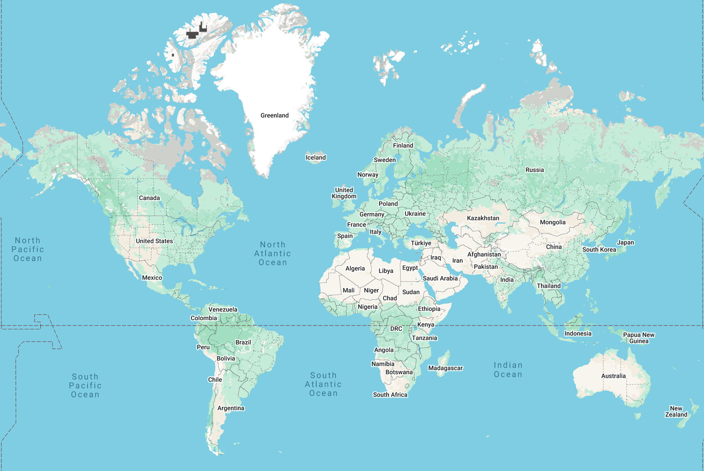

Superarctic Frigid Summer Climate

Cities with this climate:
Concordia Research Station, Antarctica (1971–2000 normals, source)
Map data for oceans or Antarctica is not available
Global distribution of this climate based on 1961–1990 climatological normals:
Global distribution of this climate in 2025:
Global distribution of this climate in 2100: